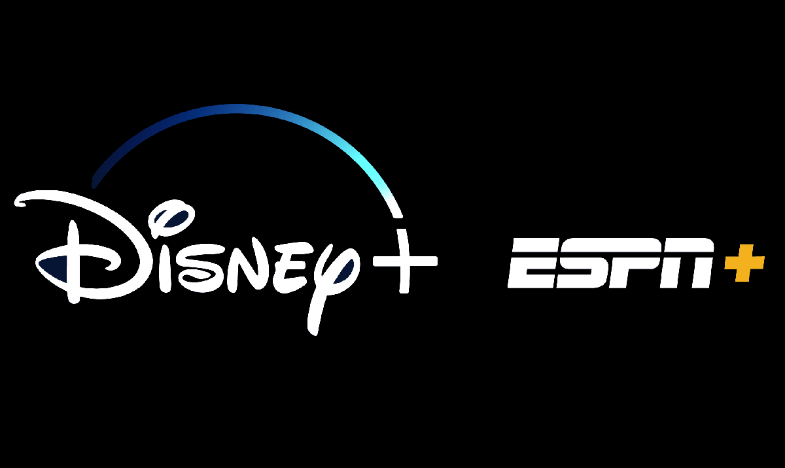
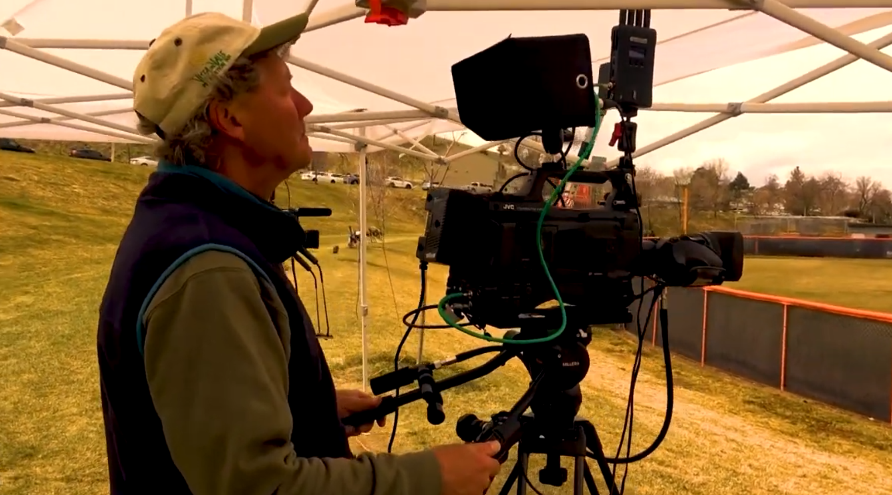

Sports Broadcasting
From camera operation to directing live productions.
Derek spent two and a half years in sports broadcasting, starting as a camera operator and building hands-on experience across live production roles. Over time, he moved into directing, learning how to coordinate camera coverage, pace a live show, and make fast production decisions under real broadcast pressure.

